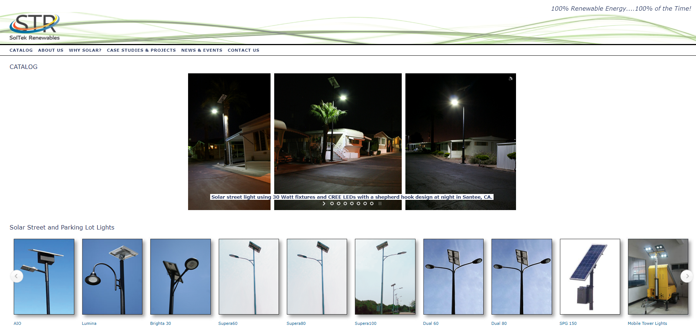

Background
Imagine that you are an urban planner in charge of designing a new, eco-friendly park. Choosing the lights used in the park is a key decision you have to make since it offers an opportunity to make the park more environmentally friendly. What’s the first way you would go about researching this decision? It’s likely your answer is to look up companies on Google and check out their websites.
SolTek Renewables offers solar lighting products that are optimal for these large-scale projects. These lights are also off of the main electrical grid, a point that owner Mario Villalobos stresses as a major benefit in the case of a grid power outage. However, the company’s website is outdated, visually unappealing, and hard to navigate, which deters potential clients. In the age of the internet, a company’s website is very much its public image, and Mario needs a website that reflects the environmentalism and benefits of solar lighting.
Problem Statement
SolTek’s current website does a poor job portraying and explaining its lighting products and the past projects they’ve been implemented in. The website needs to be redesigned to make a more attractive case for these products and how they can be used.
What are we trying to solve?
SolTek's current website design:
The current site looks outdated and doesn't clearly convey what SolTek does as a business. The image carousel of the lights in dark environments also fail to serve as an attractive first impression for potential clients.
In a Nutshell
Our redesign focused on making the home page a clear entry point for the pages that a prospective client would want to see first. These primary pages are SolTek's lighting catalog and a "Why Solar?" page that explains solar lighting's benefits over traditional lighting that is on the main electrical grid.
Meeting the Client's Needs
Mario’s main business model revolves around sales and getting new people to try solar lights, so including info on how SolTek’s lights compare to traditional lights is important.

We know what Mario needs. But what do the users want?
To discover what a typical user looks like and what they would want to see on the website, we conducted 8 interviews with engineers, urban planners, and sustainability-minded individuals.
Here's what they said and how it relates to SolTek's current website.
What frustrates you about the process of selecting lighting options for a project?
"Everything has a lot of information, like an information-overload. The lumens, the voltage, etc. doesn't really matter as all the project heads cared about was what would look good and provide value to the property." - Sam S., former commercial real estate worker
What is your opinion on using solar lighting in bigger projects, like street lighting or parking lots?
"Solar isn’t too commonly used currently, but would be good for areas that are tough to get power to or are smaller-scale, like parks and pedestrian walkways." - B.R., civil engineer
Why create when we can steal?
When thinking about what direction to go with our redesign, we decided that other renewable energy websites are a great source of inspiration. Our main goal was to update SolTek's design to a clean, modern one, so why not find modern websites and take some of their ideas?
We did a competitive analysis with several websites, but Green Frog Systems and Del Sol Resources proved to have the most relevant design ideas we wanted to implement. The main features we used in our final design were Green Frog's navigation system and the both websites' brand colors.
Checkpoint: What ideas are moving forward?
Before creating wireframes, we sketched out some ideas to visualize our highest priority features. Several of these key ideas made it to the final design:


From Concept to Reality
It's all coming together
Insert annotated screenshots of our final design. Currently in the works.
Reflection
The only redesigns of apps or websites I have done were small-scale, such as redesigning a sole feature. Redesigning a whole website was a completely new endeavor, and a much more involved task than it seems on the surface. Probably the biggest challenge was making sure the website served the client’s real-world needs rather than the perfect hypothetical website we envisioned. Mario’s need for the site to primarily be a middleman between the customer and him, rather than a dedicated shopping site, posed interesting design challenges. I needed to consider questions like “How do we entice customers to use the products without stating prices?” and “How do we convince customers early on about the benefits of solar lighting?” Overall, managing the client’s expectations taught me how to adapt my thought process to different scenarios, and how to design around specific and niche needs. I also learned a lot about how to organize team work. From creating a detailed development plan to deciding whether each person works on whole screens or on components of all the screens, I was exposed to a lot of new ways to divide the workload. This project is definitely too much for one person, and it helped further convince me that designing as part of a small team yields better results than just working alone. My advice for next year’s 187B students is to put a lot of effort into drafting how the site might look before creating the bulk of the content. Try out a bunch of different ideas for page layout before choosing one, because once a solid portion of the prototype is built, it’ll be a lot harder to radically change it.